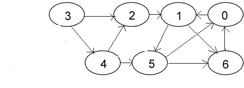

Algorithm
We do a DFS traversal of the given graph. For every visited vertex ‘v’, if there is an adjacent ‘u’ such that u is already visited and u is not parent of v, then there is a cycle in graph. If we don’t find such an adjacent for any vertex, we say that there is no cycle. The assumption of this approach is that there are no parallel edges between any two vertices.
For example in the below graph

There is a cycle 1-2-3.
Source Code
#include <bits/stdc++.h >
using namespace std;
int c=1,u=0;
vector<int> v2;
struct node{
int x;
int val;
node *next1;
};
//function to create edge between source and destination to create a graph.
void addedge(node a[],int src,int dest)
{
node *ptr=new node();
node *head=a[src].next1;
ptr->x=dest;
a[src].next1=ptr;
ptr->next1=head;
}
//function to apply dfs using queue.This will give different components on which dfs has een applied and also gives df number.
void dfs(node a[],int p,int v)
{
int o,t;
queue<int> q;
q.push(p);
a[p].val=c;
while(!q.empty())
{
node *ptr2=a[p].next1;
while(ptr2!=NULL)
{
if(a[ptr2->x].val==0)
{
q.push(ptr2->x);
c=c+1;
a[ptr2->x].val=c;
}
ptr2=ptr2->next1;
}
cout<<q.front()<<"\t";
q.pop();
p=q.front();
}
cout<<"\n";
for(int i=0;i<v;i++)
{
if(a[i].val==0)
{
o=i;
t=1;
break;
}
}
if(t==1)
{
c=c+1;
dfs(a,o,v);
}
}
//Function to print the graph.Here it would print the df number as well.
void print(node a[],int v)
{
for(int i=0;i<v;i++)
{
cout<<a[i].x<<"("<<a[i].val<<")"<<"\t";
node *ptr1=a[i].next1;
while(ptr1!=NULL)
{
cout<<ptr1->x<<"\t";
ptr1=ptr1->next1;
}
cout<<"\n";
}
}
//Driver program to apply above functions.
main()
{
int v,m,k,y,d=0;
cout<<"enter no. of vertices";
cin>>v;
//here take v according to the vertices given below.It is 7 here
node graph[v];
//cout<<"enter values of graph starting from 0"<<"\t";
for(int i=0;i<v;i++)
{
graph[i].val=0;
graph[i].x=i;
graph[i].next1=NULL;
}
//use any of the given below to create an edge
/*while(cin.get()!='\n')
{
cin>>m>>k;
addedge(graph,m,k);
}*/
//or
addedge(graph,0,1);
addedge(graph,1,5);
addedge(graph,1,6);
addedge(graph,2,1);
addedge(graph,3,4);
addedge(graph,3,2);
addedge(graph,4,2);
addedge(graph,5,0);
addedge(graph,5,6);
addedge(graph,6,0);
cout<<"enter the vertex u want to start ur dfs with"<<endl;
cin>>y;
dfs(graph,y,v);
cout<<endl;
print(graph,v);
}